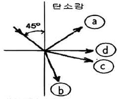
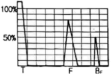
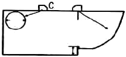

초음파비파괴검사기사 (2018-08-19 기출문제)
1과목: 비파괴검사 개론
1. 초음파탐상검사의 품질평가 적용 예에 대해 기술한 것 중 옳은 것은?
- 규격이나 절차서에 근거하여 제조되고, 규정된 품질인가 아닌가를 확인하기 위한 품질관리의 한 수단으로 초음파탐상검사를 실시한다.
- 품질관리를 위한 관리한계로 결함검사의 판정기준을 이용하는 것은 불가능하다.
- 품질관리의 관리한계는 주어진 설계기준하에서 사용되며 중대한 재해를 초래하는 파괴사고를 발생할 우려가 있다는 판단에 근거하여 정해진다.
- 품질평가에서 합격한 구조물은 사용개시 후 발생할 수 있는 모든 조건이 고려되었기 때문에 손상 및 고장의 원인이 되는 인자는 존재하지 않는다.
(정답률: 83%)

2. 다음 중 LASER(레이저)가 이용되는 검사법은?
- Holography
- Thermography
- Xeroradiography
- Auto radiography
(정답률: 80%)
3. 비파괴검사의 특성에 대한 설명 중 틀린 것은?
- 방사선투과시험은 초음파탐상보다 면상 결함을 잘 탐상할 수 있다.
- 표면 결함의 검출에 적합한 시험은 자분탐상시험, 침투탐상시험 및 와전류탐상시험이다.
- 방사선투과시험은 원리적으로 투과법이다.
- 초음파탐상시험은 원리적으로 반사법이 많이 이용되고 있다.
(정답률: 76%)
4. 염색침투검사법이 형광침투검사법에 비해 좋은 점은?
- 검출감도가 좋다.
- 표면이 검은 시험체에 좋다.
- 어두운 곳에서도 검사가 가능하다.
- 현장에서 간편하게 이용할 수 있다.
(정답률: 84%)
5. 와류탐상검사에서 전류 흐름에 대한 코일의 총 저항을 무엇이라 하는가?
- 인덕턴스
- 리액턴스
- 임피던스
- 리프트옵
(정답률: 77%)
6. 소성변형의 가공방법을 설명한 것 중 틀린 것은?
- 압연가공 : 회전하는 Roll 사이에 소재를 통과시켜 성형
- 인발가공 : 괴상의 소재를 고온에서 가압하여 판재로 성형
- 프레스가공 : 판재를 펀치와 다이 사이에 압축하여 성형
- 압출가공 : 다이를 통하여 금속을 밀어내어 제품을 성형
(정답률: 68%)
7. Al-Si 합금을 용해하여 용탕 속에 불화 알칼리 또는 금속 나트륨을 첨가하여 기계적 성질을 향상시키는 것은 어느 기구에 의해 강화되는 것인가?
- 고용강화
- 분산강화
- 석출강화
- 입자미세화강화
(정답률: 67%)
8. 마텐자이트형 변태의 일반적인 특징이 아닌 것은?
- 마텐자이트 변태는 무확산 변태이다.
- 마텐자이트 변태는 고용체의 단일상이다.
- 마텐자이트 변태로 인해 강의 경도가 상승된다.
- 마텐자이트 변태를 하면 표면기복이 없어진다.
(정답률: 35%)
9. 분말야금법에 대한 설명으로 틀린 것은?
- 생산된 제품에 기공이 존재한다.
- 용해법으로 생기는 쳔석, 결정립 조대화의 문제점이 적다.
- 제품의 정밀도가 좋지 않으며, 용융점까지의 고온이 필요하다.
- 최종제품의 형상으로 제조할 수 있어 절삭가공을 생략할 수 있다.
(정답률: 51%)
10. 비중이 1.74로 실용 금속 중에서 가장 가볍고, 조밀육방격자의 결정구조를 가지는 것은?
- Mg
- W
- Al
- Ti
(정답률: 71%)
11. 다음 중 철강 재료에서 주요 합금원소가 크롬 니켈이며, 내열 및 내식성이 우수한 것은?
- 스테인리스강
- 탄소강
- 해드필드강
- 황복합쾌삭강
(정답률: 79%)
12. 샤르피 충격시험에 대한 설명으로 틀린 것은?
- 충격흡수에너지를 비교적 간단히 측정할 수 있는 시험법이다.
- 체심입방격자 합금은 온도변화에 따라 연성-취성 전이를 나타낸다.
- 충격흡수에너지는 인장시험의 응력-변형률 곡석의 면적인 인성과 관계가 있다.
- 일반적으로 면심입방격자 합금은 샤르피 충격시험에서 취성파괴양식을 보인다.
(정답률: 48%)
13. 표점거리 100mm인 인장시험편의 연신율이 30%였을 때, 늘어난 길이는 몇 mm인가?
- 10
- 20
- 30
- 40
(정답률: 82%)
14. 강의 열처리법 중 담금질된 강을 A1변태점 이하의 온도에서 가열하는 것으로 인성을 향상시키는 것은?
- Quenching
- Tempering
- Annealing
- Normalizing
(정답률: 56%)
15. 구리의 성질에 대한 설명 중 틀린 것은?
- 전연성이 좋아 가공이 용이하다.
- 전기 및 열의 전도성이 우수하다.
- 화학적 저항력이 작아서 부식이 심하다.
- Zn, Sn, Ni 등과 용이하게 합금을 만든다.
(정답률: 72%)
16. 잔류응력을 완화시키기 위한 방법이 아닌 것은?
- 피닝법
- 금속침투법
- 응력제거 풀림법
- 기계적 응력 완화법
(정답률: 82%)
17. 용접용 지그 사용 시 장점이 아닌 것은?
- 잔류응력을 방지할 수 있다.
- 동일제품을 대량생산할 수 있다.
- 작업을 용이하게 하고 용접 능률을 높인다.
- 제품의 정밀도와 용접부의 신뢰성 높인다.
(정답률: 56%)
18. 아크 용접기의 정격 2차 전류가 400A 인 용접기로 용접작업 시 실제 225A를 사용했다면 이 용접기의 허용사용률은 약 몇 %인가? (단, 정격사용률은 40%이다.)
- 96.6
- 1⑤.3
- 126.4
- 156.3
(정답률: 69%)
19. 직류 아크 용접 시 두 전극 사이의 아크 전압 분포를 나타내는 식으로 옳은 것은? (단, Va : 아크 전압, VA : 양극 전압 강하, Vk : 음극 전압강하, Vp : 아크 기둥 전압 강하이다.)
- Va=VA-Vk+Vp
- Va=VA+Vk-Vp
- Va=VA-Vk-Vp
- Va=VA+Vk+Vp
(정답률: 63%)
20. 다음 중 불활성 가스의 종류가 아닌 것은?
- 아르곤
- 헬륨
- 수소
- 네온
(정답률: 74%)
2과목: 초음파탐상검사 원리
21. 주어진 재질내에서 판파의 속도를 결정하는 요소가 아닌 것은?
- 진동자의 크기
- 판의 두께
- 주파수
- 파의 입사각도
(정답률: 40%)
22. 공진법 초음파탐상검사에서 두꺼운 재료의 두께를 측정할 때 다음 중 가장 적합한 주파수는?
- 1MHz
- 10MHz
- 20MHz
- 25MHz
(정답률: 77%)
23. 초음파탐상검사에서 정확한 에코높이가 얻어지지 않고 결함을 과소 또는 과대 평가하게 되는 탐상기 기능은?
- 시간축 직선성
- 분해능
- 증폭 직선성
- 거리진폭 특성곡선
(정답률: 78%)
24. 다음 중 액체 내에 존재하는 파의 진동 형태는?
- 종파
- 횡파
- 표면파
- 판파
(정답률: 66%)
25. 다음 진동자의 재질 중 가장 높은 분해능을 가지면서 수신효율이 가장 우수한 것은?
- 석영
- 황산리튬
- 티탄산바륨
- 세라믹
(정답률: 69%)
26. 횡파의 굴절각이 90˚가 되어 표면파가 생성될 때의 각도는?
- 제1임계각
- 제2임계각
- 제3임계각
- 제4임계각
(정답률: 71%)
27. 전자기초음파탐상(EMATA)법의 가장 큰 장점은?
- 비접촉 탐상이 가능하여 접촉매질이 필요없다.
- S/N비가 매우 높다.
- 탐촉자의 제작이 용이하고 장비가 저가이며, 다이나믹 포커싱(Dynamic focusing)이 가능하다.
- 내부 결함 평가에 특히 유용하다.
(정답률: 58%)
28. 초음파탐상기의 리젝션(Rejection)과 필터(Filter)를 사용 시 영향으로 옳은 것은?
- 두 단자를 사용하면 증폭직선성과 분해능이 증가한다.
- 두 단자를 사용하면 증폭직선성과 분해능이 저하된다.
- 리젝션은 증폭직선성을 증가시키고 필터는 분해늘을 저하시킨다.
- 리젝션은 증폭직선성을 증가시키고 필터는 분해늘을 증가시킨다.
(정답률: 48%)
29. 용접부 초음파탐상검사에서 탐촉자 선정 시 고려해야 할 사항이 아닌 것은?
- 탐상속도를 높여야 할 때에는 고주파수의 작은 탐촉자를 사용한다.
- 탐상표면의 거칠기가 클 때에는 낮은 주파수를 사용한다.
- 피검체의 결정입이 클 경우에는 저주파수를 사용한다.
- 분해능을 높이기 위해서는 고주파수를 이용한다.
(정답률: 60%)
30. 탄소강과 스테인리스강이 계면을 이루며 접촉되어 있을 때 그림과 같이 탄소강으로부터 스테인리스강 쪽으로 음파가 임사할 경우 스테인리스 강 중의 음에 대한 굴절을 올바르게 설명한 것은? (단, 탄소강의 음속은 6000m/s, 밀도는 7.8g/cm3, 스테인리스강의 음속은 5500m/s, 밀도는 7.9g/cm3

- ⓐ와 같이 모두 반사할 것이다.
- ⓑ와 같이 굴적각이 45˚보다 작은 각으로 굴절할 것이다.
- ⓒ와 같이 굴적각이 45˚보다 큰 각으로 굴절할 것이다.
- ⓓ와 같이 경계면으로 진행할 것이다.
(정답률: 60%)
31. 강의 종파속도가 5900m/s, 두께가 5mm일 때 공진 주파수는?
- 0.59MHz
- 5.9MHz
- 0.59kHz
- 59kHz
(정답률: 53%)
32. 단강품 초음파탐상검사에 대한 설명 중 옳은 것은?
- 근거리음장을 보정하기 위하여 분할형 탐촉자를 사용한다.
- 결정입이 크기 때문에 높은 주파수를 사용한다.
- 수직탐상과 사각탐상을 반드시 수행한다.
- 종파보다 횡파를 이용한다.
(정답률: 63%)
33. 초음파 탐촉자 내에 사용하는 흡음재에 대한 설명으로 옳은 것은?
- 진동자의 펄스 폭 조정을 위해
- 초음파진행 시 발생하는 감쇠현상을 줄이기 위해
- 시험체 내부로 진행하는 초음파의 흡수
- 흡음재의 재질에 따른 특성 차이는 없음
(정답률: 41%)
34. 초음파탐상검사에서 근거리음장에 대한 설명으로 옳은 것은?
- 초음파탐상검사에서 근거리 음장 내에서만 정확한 검사가 가능하다.
- 파의 간섭에 의한 상호작용으로 진동자 표면으로부터 일정한 거리 내에서는 초음파의 강도가 일정하다.
- 근거리음장 내에서는 결함으로부터의 반사지시 강도가 결함의 크기에 반비례한다.
- 근거리음장 내에서는 하나의 결함이 여러개의 지시를 나타낼 수 있다.
(정답률: 61%)
35. 아크릴에서 철강으로 종파가 굴절될 때 종파의 임계각은? (단, 아크릴 음파속도 = 2300m/s, 강의 음파속도 = 6000m/s이다.)
- 22.5˚
- 17.80˚
- 220˚
- 23.90˚
(정답률: 54%)
36. 경사각 탐촉자로 강재에 70˚로 굴절될 때와 동일한 조건에서 알루미늄에서의 굴절각은? (단, 강재의 Vs=3200m/sec, 알루미늄의 Vs=3100m/sec)
- 57˚
- 65.6˚
- 69.5˚
- 74.5˚
(정답률: 50%)
37. 오스테나이트 스테인리스강 용접부의 초음파탐상검사 시 에코식별을 용이하게 하기 위한 탐촉자가 아닌 것은?
- 분할형 사각 탐촉자
- 고주파수 경사각탐촉자
- 고분해능탐촉자
- 점집속사각탐촉자
(정답률: 54%)
38. 비접촉식 초음파탐상검사 방법이 아닌 것은?
- 레이저-초음파탐상법
- 주파수해석법
- 유도초음파법
- 전자초음파탐상법
(정답률: 44%)
39. 오스테나이트계 스테인리스강 용접부 조직의 감쇠 원인이 아닌 것은?
- 결정입의 조대화
- 탄화물의 석출
- 페라이트강 증가
- 마이크로 균열
(정답률: 51%)
40. 다음 초음파탐상 주사방법 중 탐촉자 두 개를 사용하지 않는 것은?
- 탠덤주사
- K주사
- 목돌림 주사
- 두갈래 주사
(정답률: 76%)
3과목: 초음파탐상검사 시험
41. 초음파 탐상기의 탐상도형에 대한 설명 중 틀린 것은?
- 송신 펄스 다음에 맨 처음 나타나는 에코는 반드시 저면에코이다.
- 저면과 표면에서 다중반사를 일으키고 에코가 등간격으로 여러 개 나오는 경우가 많다.
- 라미네이션 결함에서는 다중반사를 일으키고 에코가 등간격으로 여러 개 나오는 경우가 많다.
- 표면에코와 저면에코와의 사이에 에코가 나타나면 비금속개재물 등 내부결함이 존재한다고 볼 수 있다.
(정답률: 59%)
42. 용접부 탐상에 사용하는 대비시험편인 RB-4의 주요 용도로 틀린 것은?
- 수직탐상의 탐상감도 교정
- 수직탐상의 성능특성 측정
- 수직탐상의 측정범위 교정
- 사각탐상의 탐상감도 교정
(정답률: 38%)
43. 아래 그림에서 결함부의 BF에 대한 결함 에고(F)의 크기는 몇 %인가?

- 100%
- 140%
- 160%
- 180%
(정답률: 46%)
44. 아래 그림의 표준시험편 STB-A1에서 C지점의 용도는?

- 종합적 확인
- 감도 조정
- 굴절각 측정
- 입사점 측정
(정답률: 78%)
45. 두 개의 송신과 수신탐촉자를 사용할 때 가장 이상적인 조합은?
- 송신기-수정, 수신기-티탄산바륨
- 송신기-티탄산바륨, 수신기-황산리튬
- 송신기-황산리튬, 수신기-티탄산바륨
- 송신기-티탄산바륨, 수신기-수정
(정답률: 68%)
46. 강용접부를 초음파탐상검사할 때 경사각 탐촉자의 입사점으로부터 탐촉자 앞쪽 끝부분까지의 길이를 무엇이라 하는가?
- 진동자 유효길이
- 접근한계길이
- 접속거리
- 흡음재 길이
(정답률: 73%)
47. 기계적, 전기적으로 안정되어 있고 불용성이며 큐리점이 약 567℃로 고온에서 사용이 가능한 탐촉자는?
- 수정(quartz)
- 황산리튬(lithium sulfate)
- 티탄산 바륨(barium-titanate)
- 지르콘산 납(lead zirconate)
(정답률: 66%)
48. 경사각 탐상을 할 때 표준 및 대비시험편의 사용에 대한 설명으로 틀린 것은?
- Rb-4를 DAC 곡선의 작성에 사용한다.
- Rb-47은 길이이음 용접부에 대하여 사용한다.
- STB-A3를 이용하여 탐촉자의 입사점과 굴절각을 측정한다.
- 50mm 측정범위는 STB-Al 의 100R면을 반사원으로 사용한다.
(정답률: 51%)
49. 레이저를 이용한 초음파탐상검사방법에서 초음파 발생 원리에 대한 설명으로 올바른 것은?
- 고 에너지의 레이저를 시험체에 조사함으로 국부적인 열팽창에 의한 초음파 발생
- 시험체 표면에 레이저를 조사함에 의한 로렌츠 힘의 발생
- 레이저 광선에 의한 역압전효과를 이용하여 초음파를 발생
- 레이저에 의해 탐촉자 속의 진동자를 진동시켜 시험체로 초음파를 발생
(정답률: 38%)
50. 초음파탐상검사를 하여 에코의 진폭이 스크린높이의 32%인 결함에코를 발견하였다. 이 결함에코를 스크린 높이의 90%가 되게 하려면 게인을 얼마나 올려야 하는가?
- 6dB
- 7dB
- 9dB
- 13dB
(정답률: 69%)
51. 평판 맞대기 용접부를 탐상할 때 판 두께가 20mm 이하일 때 가장 적절한 탐촉자의 공칭굴절각은?
- 30˚
- 45˚
- 60˚
- 70˚
(정답률: 57%)
52. 판두께 30mm 인 맞대기 용접부를 실측 굴절각 71˚의 경사각 탐촉자로 1회 반사법을 이용하여 탐상할 때 가장 적당한 측정범위는?
- 50mm
- 75mm
- 90mm
- 180mm
(정답률: 62%)
53. 초음파 탐상기가 갖추어야 할 주요 3대 성능은?
- 증폭 직선성, 분해능, 최대 감도
- 증폭 직선성, 분해능, 시간축 직선성
- 증폭 직선성, 분해능, CRT의 크기
- 증폭 직선성, 분해능, 브라운관의 크기, CRT의 밝기
(정답률: 78%)
54. 초음파 탐상검사로 검출하기 가장 어려운 결함은?
- 오버랩
- 루트균열
- 수축공
- 라미네이션
(정답률: 50%)
55. 전도성 시험체에 전자력으로 초음파를 발생시키고 센서코일로 초음파를 수신하는 방법은?
- 유도초음파
- 전자기초음파
- 표면초음파
- 레이저초음파
(정답률: 65%)
56. 초음파탐상검사에서 적산효과가 발생할 수 있는 경우에 대한 설명으로 틀린 것은?
- 근거리음장이 작을 때
- 감쇠가 적을 때
- 두께가 얇을 때
- 결함이 작을 때
(정답률: 32%)
57. 일반화한 DGS 선도에서 횡축의 눈금 1이 의미하는 값은?
- 횡축은 빔거리를 나타내며, 1은 1mm를 의미한다.
- 횡축은 에코의 높이를 나타내며, 1은 1dB를 의미한다.
- 횡축은 빔거리를 나타내며, 1은 근거리음장 길이를 의미한다.
- 횡축은 에코의 높이를 나타내며, 1은 접면에코와 결함에코의 비가 1임을 의미한다.
(정답률: 32%)
58. 펄스반사법 초음파탐상장치를 사용하여 강용접부를 60˚의 경사각 탐촉자로 탐상할 때 용접부 부근에서 에코가 나타났다. 결함의 종류를 추정하는 방법에 관한 설명으로 틀린 것은?
- 최대 에코높이를 이용하는 방법으로 탐상하여 에코높이의 변화로 결함종류를 추정한다.
- 여러 주사방법으로 탐상하여 에코높이의 변화로 결함종류를 추정한다.
- 탐상기에 나타난 에코의 파형모양으로 결함종류를 추정한다.
- 경사각 탐상 후 수직 탐촉자를 이용하여 결함모양을 그려서 결함종류를 추정한다.
(정답률: 53%)
59. 초음파탐상시험에서 나타난 두 신호의 증폭을 비교한 결과 첫 번째 신호보다 두 번째 신호가 20dB 낮게 나타났다. 이것의 비율은?
- 2:1
- 5:1
- 10:1
- 20:1
(정답률: 52%)
60. 초음파 탐상 결과의 표시 또는 기록 방법으로 시험체 저면의 부식 등에 의한 두께 감소상태를 corrosion map으로 나타내는 방법은?
- A-Scan법
- B-Scan법
- C-Scan법
- D-Scan법
(정답률: 43%)
4과목: 초음파탐상검사 규격
61. 알루미늄의 맞대기용접부의 초음파경사각탐상 시험방법(KS B 0897)에 의한 탐상기의 설명으로 틀린 것은?
- 탐상기는 송수신절환이 1탐촉자법으로만 사용할 수 있어야 한다.
- 탐상기는 주파수 5MHz로 작동하여야 한다.
- 탐상기의 증폭 직선성은 ±3% 이내여야 한다.
- 탐상기의 시간축 직선성은 ±1% 이내여야 한다.
(정답률: 46%)
62. 금속재료의 펄스반사법에 따른 초음파탐상시험방법 통칙(KS B 0817)에서 탐상장치의 점검에 해당하지 않는 것은?
- 일상점검
- 정기점검
- 특별점검
- 중간점검
(정답률: 58%)
63. 강 용접부의 초음파탐상 시험방법(KS B 0817)에서 영역구분의 결정 시 인접한 구분선 작성의 감도차는?
- 2dB
- 6dB
- 9dB
- 12dB
(정답률: 58%)
64. 보일러 및 압력용기에 대한 표준초음파탐상검사(ASME Sec.V, Art.23 SA-435)에 따라 압력 용기용 강판을 수직 탐촉자로 검사할 때 건전부 반대면에서의 저면반사 높이가 얼마가 되도록 설정하는가?
- 전체 스크린 높이의 80%
- 전체 스크린 높이의 50%
- 전체 스크린 높이의 20%
- 제1회 저면 에코(echo) 높이의 1/2
(정답률: 34%)
65. 강 용접부의 초음파탐상 시험방법(KS B 0896)에서 SAC회로를 내장하는 탐상기의 성능에 대한 설명으로 옳지 않은 것은?
- DAC 회로는 40dB 이상 보상할 수 있는 성능을 갖고 있는 것으로 한다.
- DAC의 기점은 강 중의 횡파 환산 빔 노정에서 적어도 0mm~15mm까지의 범위에서 임의의 위치로 조정할 수 있는 것으로 한다.
- 경사값의 조정은 적어도 0.048dB/mm~0.48dB/mm(횡파)의 범위에서 가능한 것으로 한다.
- 탐상기의 게인은 DAC 범위 및 그 전후에서 그 연속성을 가진 것으로 한다.
(정답률: 35%)
66. 보일러 및 압력용기에 대한 표준초음파탐상검사(ASME Sec.V, Art.4)에서 대비시험편을 제작할 때 측면공지름의 허용 오차범위는?
- ±1/32인치
- ±1/16인치
- ±1/8인치
- ±1/4인치
(정답률: 33%)
67. ASME Sev. Ⅷ에 따라 25mm(1인치) 두께를 갖는 맞대기 용접부를 검사한 결과 다음과 같은 흠이 검출되었을 때 합격 지시로 옳은 것은?
- 참조기준(reference level)의 30%에 해당하는 8mm 융합불량
- 참조기준(reference level)의 50%에 해당하는 12.7mm 크랙
- 참조기준(reference level)의 80%에 해당하는 8mm 슬래그
- 참조기준(reference level)의 30%에 해당하는 12.7mm 용입부족
(정답률: 64%)
68. 강 용접부의 초음파탐상 시험방법(KS B 0817)에 따라 두께 30mm의 강용접부에 대하여 펄스반사법에 의한 초음파탐상을 하고자 한다. 이때 초음파탐상기의 시간축의 직선성은 풀 스케일의 몇 %이내이면 만족되는가?
- ±1.0%
- ±3.0%
- ±4.0%
- ±5.0%
(정답률: 45%)
69. 압력용기용 강판의 초음파탐상 시험방법(KS B 0233)에서 결함의 밀집도를 평가하기 위해 환산결함 개수를 구한다. 이때 원칙적인 정사각형 탐상 면적은 몇 m2인가?
- 0.5
- 1
- 1.5
- 2
(정답률: 51%)
70. 강 용접부의 초음파탐상 시험방법(KS B 0896)에 따라 판두께 75mm이상의 강 용접부를 초음파 탐상시험할 때 시험장비의 탐상감도를 조정하기 위해 사용되는 시험편은?
- STB-A1
- STB-A2
- STB-A3
- RB-A4
(정답률: 40%)
71. 보일러 및 압력용기에 대한 표준초음파탐상검사(ASME Sec.V, Art.4)에서 대비시험편 제작 시 용접부 두께가 14인치 초과해서 용접부의 두께가 2인치 증가할 때 시험편 구멍의 직경은 얼마씩 증가하는가?
- 1/32인치
- 1/16인치
- 1/12인치
- 1/10
(정답률: 55%)
72. 보일러 및 압력용기에 대한 표준초음파탐상검사(ASME Sec.V, Art.4)에서 교정시험편은 동일한 곡률을 사용하거나, 대안으로 편평한 기본교정시험편을 사용할 수 있는 크기는 얼마인가?
- 시험면의 지름이 300m 초과
- 시험면의 지름이 400m 초과
- 시험면의 지름이 500m 초과
- 시험면의 지름이 600m 초과
(정답률: 36%)
73. 강 용접부의 초음파탐상 시험방법(KS B 0896)에서 규정한 음향 이방성의 검정방법 중 음향이방성의 판정으로 옳은 것은?
- 공칭 굴절각 60˚의 경사각 탐촉자에 의한 굴절각도 차가 2˚를 넘은 경우
- 공칭 굴절각 65˚의 경사각 탐촉자에 의한 굴절각도 차가 2˚를 넘는 경우
- 공칭 굴절각 70˚의 경사각 탐촉자에 의한 굴절각도 차가 2˚를 넘는 경우
- 공칭 굴절각 90˚의 경사각 탐촉자에 의한 굴절각도 차가 2˚를 넘는 경우
(정답률: 22%)
74. 보일러 및 압력용기에 대한 표준초음파탐상검사(ASME Sec.V, Art.4)에서 교정시험편 중 재료 지름이 0.94인치(24mm)에서 20인치(500mm)의 곡률 범위에서 요구되는 시험편의 개수로 옳은 것은?
- 3개
- 4개
- 5개
- 6개
(정답률: 44%)
75. 보일러 및 압력용기에 대한 표준초음파탐상검사(ASME Sec.V, Art.4)에서 초음파 탐상장치의 일반교정 요건 중 접촉검사법에서 교정시험편과 시험편 표면간의 온도차로 옳은 것은?
- 5˚F
- 15˚F
- 25˚F
- 35˚F
(정답률: 44%)
76. 강 용접부의 초음파탐상 시험방법(KS B 0896)에서 경사각 탐상 결과로 에코높이의 범위가 L선 초과 M선 이하일 때 에코높이의 영역은?
- Ⅰ영역
- Ⅱ영역
- Ⅲ영역
- Ⅳ영역
(정답률: 62%)
77. 강 용접부의 초음파탐상 시험방법(KS B 0896)에서 경사각 탐촉자의 성능 점검 항목 중 빔 중심축의 치우침에 대한 점검시기 설명으로 옳은 것은?
- 작업개시 전
- 작업개시 및 작업시간 4시간 이내마다
- 작업개시 및 작업시간 8시간 이내마다
- 작업 종료 후
(정답률: 55%)
78. 알루미늄의 맞대기용접부의 초음파 경사각탐상 시험방법(KS B 0897)에서 거리 진폭 특성곡선을 작성할 시 사용하는 측정범위에 따라 적당한 높이로 확대 또는 축소하는 홈 에코의 평가에서 사용되는 빔 노정 범위의 작성 범위는?
- 10~40%
- 10~80%
- 10~90%
- 10~100%
(정답률: 30%)
79. 비파괴시험 용어(KS B ⑤50)에서 송신펄스 및 쐐기 안 에코 때문에 탐상할 수 없는 범위를 무엇이라 하는가?
- 분해능
- 불감대
- 대역폭
- 게이트폭
(정답률: 66%)
80. 보일러 및 압력용기에 대한 표준초음파탐상검사(ASME Sec.V, Art.4)에서 규정하고 있는 일반교정 요건으로 옳은 것은?
- 교정 시에는 접촉쐐기를 사용하지 않는다.
- 교정에는 전체 초음파 탐상장비의 시스템이 포함되어야 한다.
- 교정시험이 실시될 재료표면이 볼록 또는 오목한 면에서는 실시하지 않는다.
- 직접접촉법의 경우 교정시험편과 시험표면 사이의 온도차는 10℃ 이내이어야 한다.
(정답률: 43%)